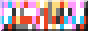
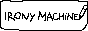
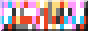
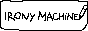

out there
neighbors
check out these silly, gorgeous, stunning, weird websites:


 





antiquechair biome cordillera darkageonline doxylamine elucidatedvoyyd oh-no revenge sunmiflowers
if your button is broken, outdated, missing, or shouldn't be here – let me know.
radio stations
- ↗ GDS.FM Zurich based 24/7 alternative music station featuring local and international artists, DJs and labels
- ↗ Callshop Radio Independently operating community radio station based in Düsseldorf, Leipzig and Paris with 40+ residents and live guests Monday through Friday evenings
- ↗ Classic House and Disco Music Website dedicated to promoting and celebrating classic house music
- ↗ Rekt FM Cyberpunk radio playing Dubstep, DnB, Synthwave, Chillsynth, Datawave, Darksynth, Cyberpunk, Midtempo, EBSM, Industrial, Dark Techno genres and more
- ↗ DATAFRUITS.FM Cooperatively owned and operated free-form net radio station
- ↗ DO!!YOU!!!
- ↗ FIP by radiofrance Rock, Jazz, Groove, Reggae, Pop, Electro, Monde, Nouveauté, Metal, Hip Hop
- ↗ JOINRAVE 24/7 electronic music, featuring a mix of ambient tracks and live sets by DJs
- ↗ NTS
- ↗ Radio Garden Explore live radio stations around the globe via a map interface
- ↗ Radio Nopal Independent and collective internet radio station located in the San Rafael neighborhood of Mexico City
- ↗ repeater radio Radio from Repeater Books exploring philosophy, film, gender, music and politics from a radical Left perspective
- ↗ SomaFM Broadcasting 20+ channels since 2000 including lots of ambient, downtempo, electronica, house, trance
- ↗ Stranded FM Internet–radio platform broadcasting 1-2 hour shows from Utrecht
- ↗ myrrh.city radio American folk, pop, indie
- ↗ Heads Radio broadcasts live from Sameheads every Friday & Saturday 20h - 22h and sometimes during the week, too
mind / body
- ↗ one sec iOS App that locks any addictive app behind breathing exercises, intention setting, etc.
- ↗ Power Vinyasa Flow My go-to at-home mini workout. YouTube (20 min)
- ↗ Replacing Social Media with Micro-Journaling YouTube (14 min)